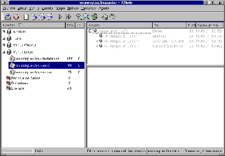

Next: Los filtros.
Up: Leafnode.
Previous: Obtención e Instalación.
Índice General
La configuración de Leafnode es relativamente sencilla,
se concentra en un sólo archivo.
Para RedHat lo encontraremos en /etc/leafnode/config,
que es donde se instala por defecto. Para Debian en
/etc/news/leafnode/config.
Este archivo tiene varias opciones que vamos a explicar
a continuación:
- server: el servidor al que se conectará Leafnode.
- supplement: un servidor de apoyo para bajar aquellas
noticias que no encontremos en el principal o cuando este
no esté disponible.
- expire: el tiempo máximo que permanecerán las noticias
en el servidor Leafnode.
- username: nombre de usuario para acceder al servidor.
- password: la clave para permitir el acceso.
- port: puerto al que se conectará Leafnode para bajar
las noticias si es diferente del 119.
- timeout: máximo tiempo de espera si no se conecta.
- nodesc: aquí decidimos si queremos bajar los grupos con
descripciones, valor 1, o sin descripciones, por defecto, valor
0.
- filterfile: fichero en el que se encuentran los filtros.
- groupexpire: tiempo de caducidad de las noticias dentro de
un grupo determinado.
- maxfetch: número máximo de noticias que se bajarán desde el
servidor en una sesión.
- initialfetch: el número de noticias que se obtienen la primera vez
que Leafnode baja un grupo de noticias. Útil cuando se trata de grupos
que tengan mucho tráfico, de esta manera se bajarán los más actuales.
- delayboy: para bajar sólo los encabezados en un primer momento y,
posteriormente, los cuerpos de aquellas noticias que hayamos seleccionado con el
lector de noticias. Hay que tener cuidado porque da problemas con
el lector de noticias del Netscape.
- maxcrosspost: número máximo al que se ha enviado una noticia, si
excede el número, la noticia no será almacenada.
- maxage: con esta opción indicamos la antigüedad máxima de las noticias
a bajar.
- maxlines: número máximo de líneas que puede contener la noticia.
- maxbytes: tamaño máximo de las noticias, para evitar la descarga de
binarios.
- timeout_short: indica el número de días que Leafnode mantendrá
un grupo de noticias antes de darlo de baja cuando no tiene a nadie
suscrito al mismo.
- timeout_long: es el número de días que Leafnode seguirá bajando
noticias a un grupo que nadie está leyendo, luego lo dará de baja.
- timeout_active: con esta opción indicamos a Leafnode un intervalo en
días para que actualize la lista de grupos desde los servidores.
- create_all_links: para aquellos que usen lectores de noticias que
permitan puntuar/matar, valor 1 para activar, 0 para desactivar.
- hostname: nombre del servidor de noticias que saldrá en la noticia
en el caso de que Leafnode no lo resuelva de forma satisfactoria.
Leafnode consta de una serie de programas que
tienen como objetivo el control del servidor:
- fetchnews: con este comando se prepara a Leafnode
para albergar los grupos de noticias y para bajar las noticias
cada vez que queramos. Presenta una serie de modificadores que
nos ayudan a controlar su funcionamiento. Los modificadores más destacados
son v, f, x, l, n y P. Con el modificador v hacemos que pase
a modo de depuración, de esta manera irá mostrando en pantalla los
mensajes que va generando, con lo que podemos ver el estado actual
o los mensajes de error si los hubiera. La profundidad de depuración
viene marcada por la cantidad de v que se pongan. El modificador
f se utiliza para volver a leer las listas de grupos desde
los servidores, puede tardar tiempo y se utiliza cuando Leanode
comienza a dar problemas al servir las noticias. El modificador
x # nos permite bajar # noticias extras desde
el exterior. El modificador l se usa para que Leafnode
no utilice los servidores suplementarios. Con el modificador
n se puede comunicar a Leafnode que no elimine los
grupos que no se leen, esto es, cuando nos inscribimos en un
grupo que nos interesa pero que no leemos desde hace tiempo. El
modificador P se utiliza para mandar las noticias que
hayamos recibido localmente a los servidores externos pero no
bajar ninguna noticia nueva.
- texpire: este es el programa que retira del servidor todas
aquellas noticias que superen el tiempo dado en la directiva expire o
groupexpire. Sus modificadores son dos, v y f. El modificador
v es el mismo que en el comando anterior. El modificador
f se utiliza para forzar la caducidad de las noticias
independientemente del tiempo de acceso.
- applyfilter: con este programa se busca dentro de las noticias
almacenadas en el directorio news todas aquellas que coincidan
con los patrones dados dentro del fichero filters para ser retiradas.
Su sintaxis es applyfilter grupo de noticias, ha de notarse
que se debe dar el nombre completo del grupo, por ejemplo, para el grupo
misc de la jerarquía ecol ha de ponerse applyfilter es.comp.os.linux.misc.
- checkgroups: se utiliza para actualizar las descripciones de los
grupos.
- newsq: con este vemos las noticias que hay en la cola listas para
ser enviadas al servidor en la próxima conexión.
Figura 17.2:
Viendo las noticias en knode
|

|
Next: Los filtros.
Up: Leafnode.
Previous: Obtención e Instalación.
Índice General
Proyecto Cursos - LuCAS - http://lucas.hispalinux.es/htmls/cursos.html